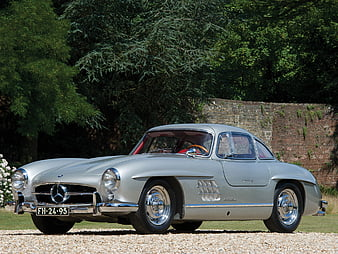

🔥Mercedes-Benz300SLGulw(1954-1963)🔥
Known for its distinctive gullwing doors. The fastest production car of its time. Featured a 3.0L inline-six engine with direct fuel injection.
Known for its distinctive gullwing doors. The fastest production car of its time. Featured a 3.0L inline-six engine with direct fuel injection.
Famously associated with James Bond. Powered by a 4.0L inline-six engine. Renowned for its elegant design and luxurious interior.
A rare and highly valuable model, with only 36 units built. Equipped with a 3.0L V12 engine. Dominated racing circuits in the early 1960s.
An American classic and the pioneer of the "pony car" category. Initially offered with a range of inline-six and V8 engines. Continues to be a popular and iconic sports car.
America's longest-running sports car model Evolved through multiple generations, each with significant design and performance improvements. Known for its powerful V8 engines and fiberglass body.